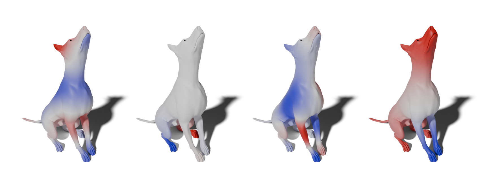
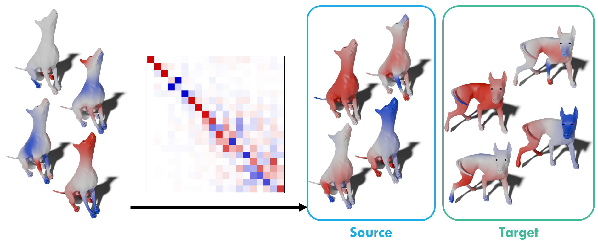
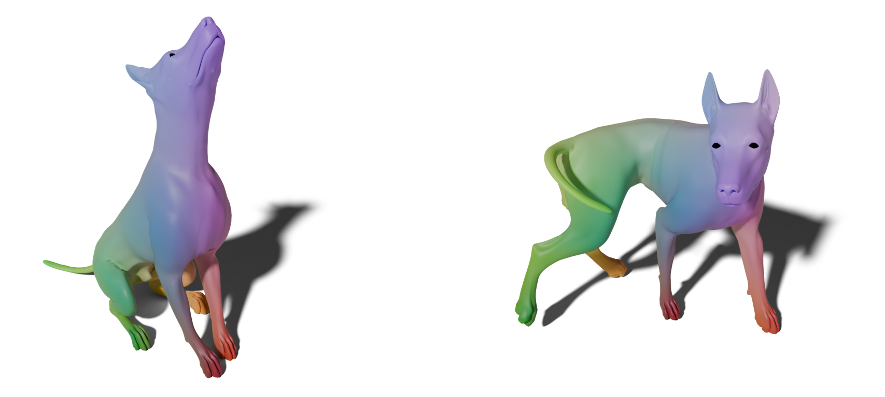

Functional Maps#
Background#
We model a 3D shape \(\mathcal{X}_1\) as a compact two-dimensional manifold embedded in \(\mathbb{R}^3\). The space of square-integrable real-valued functions on the surface, \(\mathcal{L}^2(\mathcal{X}_1)\), is defined as:
This is a Hilbert space with inner product:
In practice, shapes are discretized as point clouds or meshes, with \(n_1\) points \(\{x_i\}_{i=1}^{n_1}\). Functions are represented as vectors \(f \in \mathbb{R}^{n_1}\) with entries \(f_i = f(x_i)\). The mass matrix \(M_1 \in \mathbb{R}^{n_1 \times n_1}\) (diagonal, with entries \(m_i\)) allows discretization of the inner product:
The Laplace-Beltrami operator \(\Delta_1\) is discretized as a matrix. Its eigendecomposition yields eigenvalues \(\{\lambda_1^i\}\) and eigenfunctions \(\{\phi_1^i\}\) forming an orthonormal basis (LBO basis). For efficiency, we use a truncated basis \(\Phi_1^k = [\phi_1^1, \ldots, \phi_1^k] \in \mathbb{R}^{n_1 \times k}\).
{kind=link}

Figure: Illustration of four Laplacian eigenfunctions on a mesh.#
Functional Maps#
Given two shapes \(\mathcal{X}_1\) and \(\mathcal{X}_2\), a pointwise correspondence \(T_{12}\) induces a pull-back operator (the functional map):
In a chosen basis, this operator is represented as a matrix \(C_{21}\) mapping coefficients. If \(\Pi_{12}\) is the pointwise correspondence matrix, then:
where \(\dagger\) denotes the Moore–Penrose pseudoinverse.
{kind=link}

Figure: Example of a Functional Map calculation, highlighting the correspondences between the Laplacian eigenfunctions.#
Pointwise Map Recovery#
To recover pointwise correspondences from functional maps, we use the nearest search in the embedding space.
Here, \(\mathrm{NS}\) denotes nearest search in the embedding space.
{kind=link}

Figure: Example of resulting pointwise correspondences.#
Truncated Basis and Approximations#
Using a truncated basis (\(k \ll n_1, n_2\)) enables efficient computation but introduces approximations in delta function representation and pointwise recovery. The row \(\Phi_1^k(x)\) is the spectral embedding of \(x\) in dimension \(k\). Linear operators cannot perfectly align these embeddings without additional priors.
Key Papers#
Functional Maps: A Flexible Representation of Maps Between Shapes
ZoomOut: Spectral Upsampling for Efficient Shape Correspondence
Deep Geometric Functional Maps: Robust Feature Learning for Shape Correspondence
Fast Sinkhorn Filters: Using Matrix Scaling for Non-Rigid Shape Correspondence
For more detailed examples and tutorials, see the tutorials section.